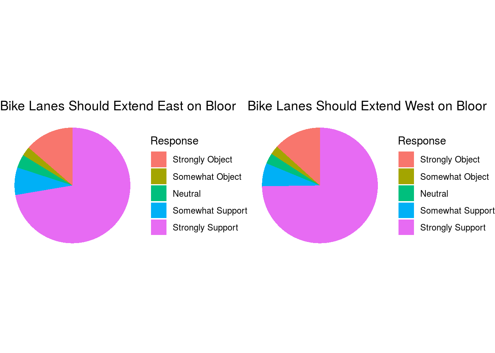
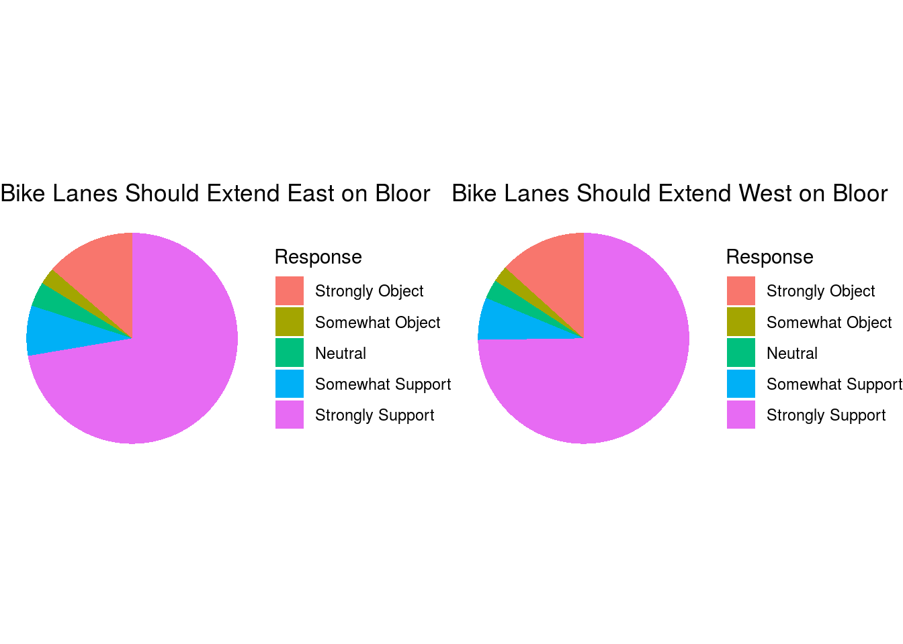

Abstract
As biking increases in the City of Toronto, so does the need for biking safety and consciousness (Khandker Nurul Habib (2014)). In an attempt to ease traffic and alleviate the dangers of biking, the City of Toronto painted bike lanes and installed rubber curbs on one of it’s most prominent streets. After piloting this project, the City then conducted a survey of local pedestrians, bikers, and drivers to obtain feedback on their project (Services (2017)). An examination into the survey results reveals strong support for the changes made to protect bikers.
Introduction
Navigating any metropolitan area can be difficult and dangerous, especially when your preferred vehicle of transport is a bicycle. As the demand for bicycles in the City of Toronto grew, so did the need for a conscious effort from the City to protect it’s bikers (Khandker Nurul Habib (2014)). While many streets in Toronto already sported painted bike lanes, in 2017, the City of Toronto took further action by placing rubber curbs in addition to painted bike lanes onto a small section Bloor Street, a prominent street with a healthy population of bikers ((???)). A survey conducted after these changes were made explored the reception to this added protection from bikers, drivers, pedestrians, and local business owners. The results indicate general satisfaction with the rubber curbs that separate motorized and bicycle traffic, as well as overwhelming agreement on the protective efficacy of bike lanes and support for their expansion.
The Data: Discussion and Graphs
First, the simplest question about these changes to Bloor Street: are they effective? That is, do the added rubber curbs make it safer for bikers to use Bloor Street?
 As over 80% of responders indicate some sort of agreement, the resounding answer to this question is ‘yes’. Unsurprisingly, this is also consistent with previous studies that have shown rubber barriers provided increased protection for bikers, leading to lower mortality rates (Anne C. Lusk (2013)). Reaffirming their support for this project, over 80% of responders also indicated interest in expanding bike lanes, both east, and west of where they are currently present.

As over 80% of responders indicate some sort of agreement, the resounding answer to this question is ‘yes’. Unsurprisingly, this is also consistent with previous studies that have shown rubber barriers provided increased protection for bikers, leading to lower mortality rates (Anne C. Lusk (2013)). Reaffirming their support for this project, over 80% of responders also indicated interest in expanding bike lanes, both east, and west of where they are currently present.

Weaknesses and Next Steps
References
Anne C. Lusk, Luis F. Miranda-Moreno, Patrick Morency. 2013. “Bicycle Guidelines and Crash Rates on Cycle Tracks in the United States.” American Journal of Public Health 103 (7): 1240–8. https://doi.org/10.2105/AJPH.2012.301043.
Khandker Nurul Habib, Mohamed Mahmoud, Jenessa Mann. 2014. “Synopsis of Bicycle Demand in the City of Toronto: Investigating the Effects of Perception, Consciousness and Comfrotability on the Purpose of Biking and Bike Ownership.” Transportation Research 70: 67–80. https://doi.org/10.1016/j.tra.2014.09.2012.
Services, Transportation. 2017. “Bloor Street Bike Lanes Feedback Survey.”